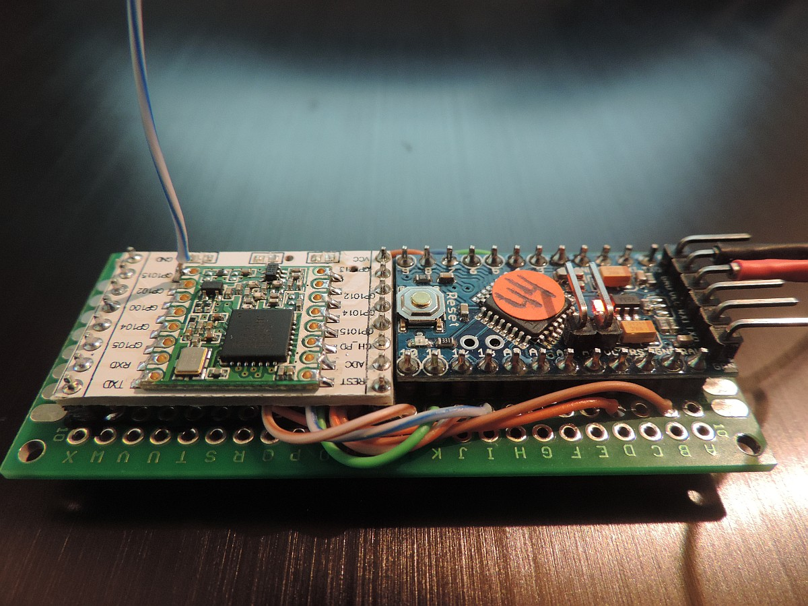

{kind=link}
{kind=link}

This document describes in more detail the design considerations for a 1-channel gateway.
Some time aho Thomas Veldkamp published his first version of a single channel gateway. His project started as a proof-of-concept to prove that it was possible with a small computer and a LoRa radio to build a gateway that would listen to one channel only and on one band. The first version was based on a Raspberri-PI and a sx1276 LoRa radio.
I have taken his code and ideas as a starting point and ported the gateway to an ESP8266 platform with a RFM95 radio. DNS support, NTP support and a webserver were added to the gateway making it usable in a lot of situations. The cost of the 1-channel gateway descreased from 50+ Euro to 15 Euro making it possible for a lot of DIY people in the TTN community to build their own LoRaWAN gateway.
Over the last months several things have happened, I liked to add downstream functions to the gateway something that had to be possible based on the LMIC-1.5 source code and several Semtech documents. At the same time Jaap Braam seemed to have exacty the same ideas when he made his version available in LUA. Jaap beat me by several days with his version, and even has a new version available that is capable of scanning multiple bands (not channels) for JOIN messages before responding over one well-known frequency channel and band.
This article aims to provide additional background on the do's and don'ts of designing a LoRa single channel gateway. It is written mainly for myself, I will probably forget a lot of technical details if I'm not writing them down, and maybe it is of use for others as well.
In order to make the project not overly complicated, we have taken some decisions in hardware support etc. Please find the most importants choices below:
These Arduino clones work (click on the picture to enlarge):
|  | |
| Arduino Pro-Mini clone 3.3V, 8MHz | Arduino Pro-Mini clone 3.3V, 16MHz |
This section described the basic protocol as supported by the gateway. A gateway should support only a few message formats:
The simple version of the LoRa 1ch gateway is using PUSH messages only, and PUSH_ACK messages are not read.
The first version was a very basic version which would only forward messages from LoRa node up to the server.
The original simple 1ch gateway, is only forwarding PUSH messages to the server is much simpler than the version 2 gateway.
Version 2 gateway will also handle JOIN_ACCEPT messages coming from the server message that the gateway has to forward exactly at the right moment, and it will also forward data messages in the RX1 and RX2 timeframe. The hardware is 100% equal between the two versions.
One of the most important additional features of the new gateway is it's ability to send periodical PULL_DATA requests to the server. That means that the backend server will receive these messages every minute or so. Unlike the STAT message, which is also sent every 30 seconds by the single channel gateway, the PULL_DATA message is (accroding to spec) interpreted by the server as the gateway being alive. And as said before, the PULL_DATA message informs the server that the gateway may send PULL_REQUEST messages.
in Class A, the node devices will only receive messages in one of the defined receive windows RX1 or RX2. These receive windows are region defined and for the European region (868MHz) in the LoRa standard